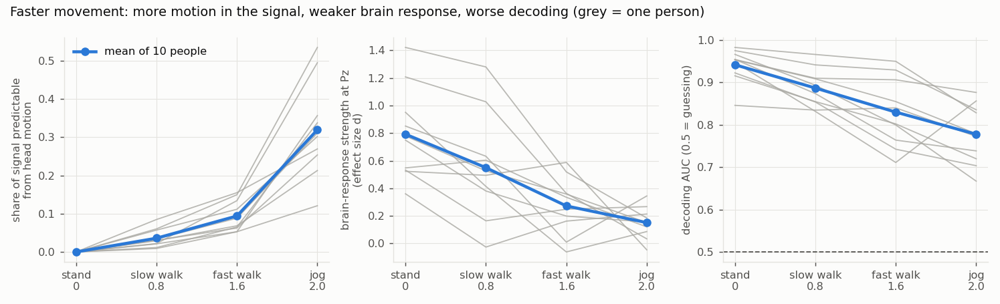
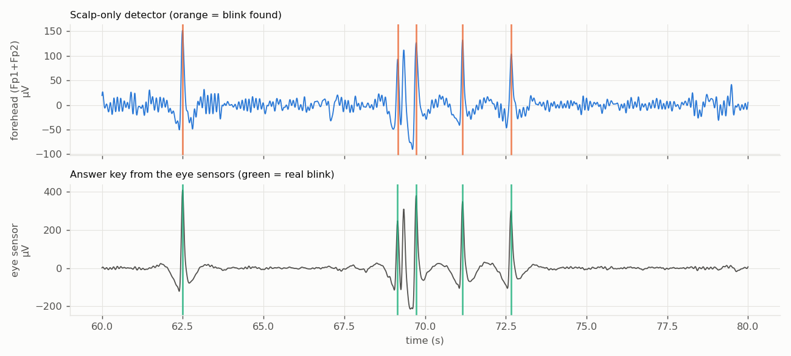

01 · The questionWhich sensors can you trust on the move?
EEG out of the lab is the obvious next step for wearables, and the obvious problem: every step shakes the cap, the cables and the skin contact. Before anything is decoded from a moving person's brain signal, someone has to say which sensors are worth listening to, sensor by sensor, moment by moment.
The setup is deliberately limited to what a real wearable cap would have: 32 scalp sensors and one head motion sensor. Eye sensors are used only as an answer key for blink detection, never as an input.
02 · The scoreNine checks, each with a reason
Every sensor gets a 0–1 "worry" from each check every 2 seconds, with yellow and red lines, computed on the decoder's own analysis band. The checks combine into one usability score.
| Check | Flags a sensor when it is… |
|---|---|
| Flat | frozen |
| Clipped | stuck at the amplifier's ceiling |
| Amplitude z | much bigger or smaller than the other sensors |
| Neighbour correlation | unlike all of its neighbours |
| Pop ratio | jumping suddenly |
| Motion R² | predictable from the head motion sensor |
| Blink | carrying a blink, found with a scalp-only detector |
| Muscle edge z | buzzier than the others at the top of the band |
| Mains hum | humming, counted only if the band includes 50/60 Hz |
Room-level problems are reported once per recording instead of once per sensor, and mains frequency is detected automatically. The dataset loader also fixes three issues in the raw files: IMU headers pointing at the wrong file, 13–25 ms of clock drift between EEG and IMU (realigned on shared event markers), and undocumented event codes.
03 · ResultsThe score tracks decoding
- Hold-out: on five people never opened while tuning, the score tracks decoding for 4 of 5.
- Footstep removal: while jogging, step-template subtraction plus motion regression improves decoding in 10 of 12 people (p = 0.03). Heel strikes are found from the head IMU, after Gwin et al. 2010.
- Push-type artifacts: the accelerometer detects them with an AUC of 0.76 on PhysioNet's motion-artifact recordings.


04 · What it taught meQuality is defined by its use
- Quality has to be defined for a use. Problems the decoder filters out anyway, like hum and high-frequency muscle, should not lower the score.
- Problems that hit every sensor are environment problems, and belong in one report per recording.
- Every number is reproducible. One script per experiment regenerates its figures and tables.
05 · Run itFrom download to score
$ pip install -r requirements.txt $ python tools/download_lee.py sub-01 sub-02 sub-03 $ python tools/check_lee.py # sanity-check the download